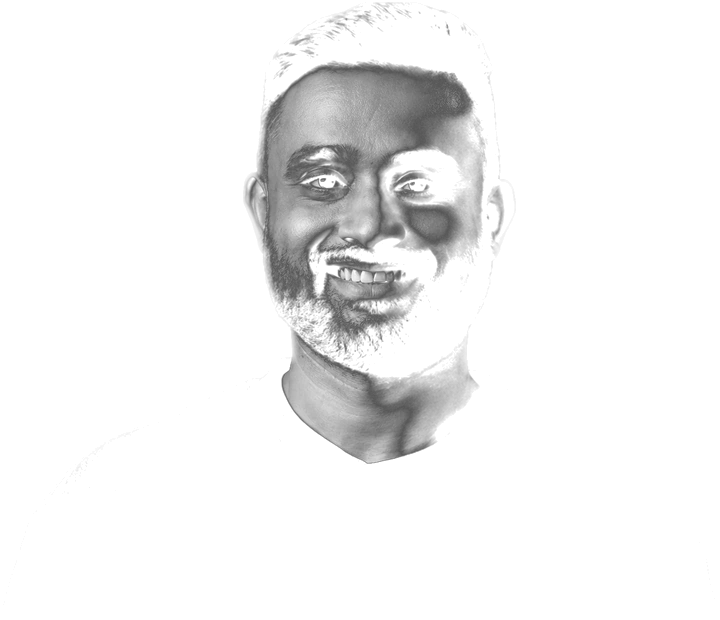

Eleven years in product design, with multiple products launched 0 → 1. Today I lead five designers across six verticals at a top-20 Indian retail brokerage serving over a million active clients, and I still ship front-end.
I’m a design leader with eleven years of experience, leading teams that ship at scale. Today I lead five designers across seven verticals at a top-20 Indian retail brokerage serving over a million active clients. I care about design that moves the product and the people — and I have not stopped making the thing itself, which is how I know what I am asking for when I ask for it.